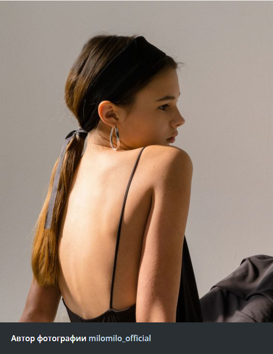

Вопрос о том, как дизайнеры видят женщин, что женщина носит и какой имидж она создает, превратился в политическую горячую картошку. Что нужно сделать из сезона? Ценить те видения, которые действительно настроены отражать нашу правду каким-то образом, чтобы мы могли делать себя.
Модные
тенденции
Показы Весна / Лето 2022, которые прошли ближе к концу прошлого года, были очень, очень разными. Хотя большинство дизайнеров продолжали писать памятку «Ты делаешь ты», их объединял поиск для выражения расширения возможностей женщин.


01
Каково на самом деле ворваться в мир моделирования
Истории об открытии моделей - это в основном мифы, но это не делает их менее привлекательными. Недостаточно быть красивым и в поисках работы нужно вырваться из безвестности.